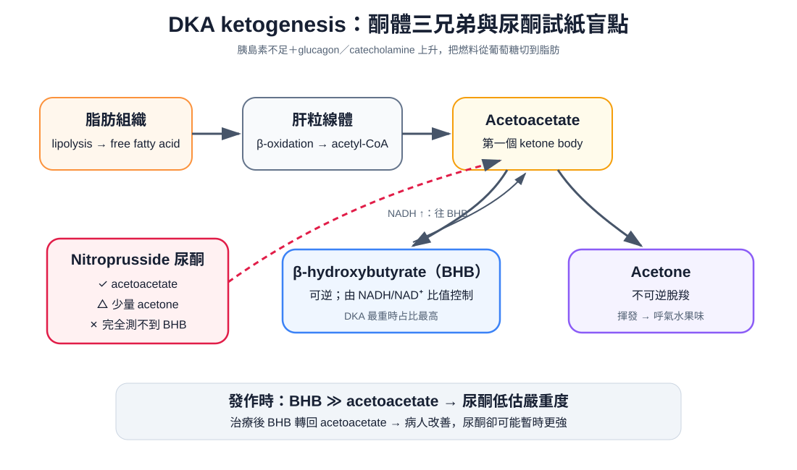
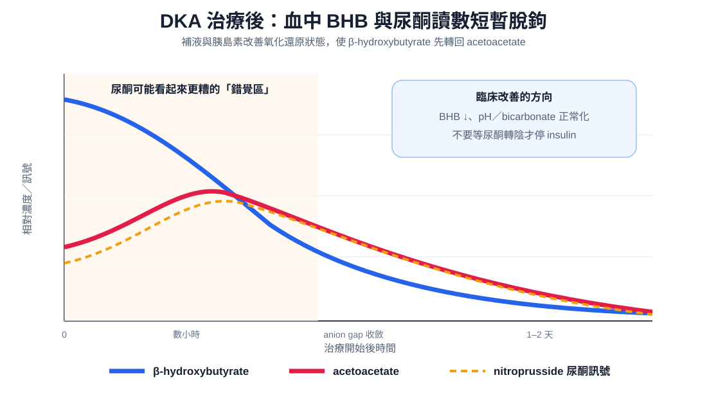

疾病 內分泌
DKA ｜ 糖尿病酮酸中毒 · Diabetic Ketoacidosis 筆記更新 2026-07-28· 整理狀態：可用
加入閱讀清單 其他名稱 6 DKA · Diabetic ketoacidosis · 糖尿病酮酸中毒 · 酮酸血症 · 糖尿病酮症酸中毒 · Euglycemic DKA
一句話總覽
胰島素不足 ＋ 升糖荷爾蒙上升 同時打開兩條閥門：肝臟狂造葡萄糖（高血糖 → 滲透性利尿 → 脫水）與脂肪狂分解成酮體（anion gap 酸中毒）。診斷靠高血糖 ＋ 酮體 ＋ anion gap 酸中毒 三本柱；治療永遠是輸液 → 鉀 → 胰島素 ；治療終點看酸中毒解除 ，不是血糖數字。
30 秒行動卡
診斷 ：高血糖 ＋ Kussmaul 呼吸 ＋ 噁心嘔吐腹痛 → 驗血糖、電解質（尤其鉀）、血氣 pH／bicarbonate、anion gap、β-hydroxybutyrate，同時找誘因。血鉀一定要在給胰島素之前拿到手。
治療 ：0.9% NaCl 第 1 小時 1–1.5 L →（K 到手）補鉀 → regular insulin 0.1 U/kg/hr 持續輸注 → 血糖降到 200 mg/dL 就加 dextrose 並繼續打胰島素 ，直到酸中毒解除。
絕對不可 ：K < 3.3（2024 版 3.5）就打胰島素｜血糖正常就停輸注｜用尿酮試紙判斷療效｜血糖不高就排除 DKA｜第一型糖尿病改用口服降糖藥。
定義與機制
項目
重點
本質
胰島素不足 ＋ counterregulatory hormone（glucagon、catecholamine、cortisol、GH）過多 → ketogenesis 失控
三本柱
高血糖 ＋ 酮體 ＋ anion gap 代謝性酸中毒 ，三者缺一不成立
好發族群
典型是第一型（分型見 T2DM ）；第二型在感染／手術／心肌梗塞下也會 ，ketosis-prone diabetes、LADA 亦然
發病速度
數小時到一天 （HHS 是數天到數週）——病人常是「昨天還好好的」
誘因 5 個 I
Infection（最常見 ：Pneumonia 、泌尿道感染、敗血症；沒發燒不代表沒感染 ，酸中毒使體溫偏低，有發燒才是異常）｜Infarction （ACS 、中風、腸繫膜缺血；年長者一律 EKG ischemia ＋ Troponin ）｜Insulin 沒打 （年輕第一型第一名；要問「這幾天實際打了幾針」）｜Intoxication （酒精，另見 Alcoholic ketoacidosis↗ ）｜Iatrogenic （類固醇、SGLT2 inhibitor）
flowchart TD
A["胰島素不足＋升糖荷爾蒙上升"] --> B["肝糖輸出↑、周邊利用↓<br/>高血糖→滲透性利尿→脫水、總體鉀流失"]
A --> C["脂肪分解↑ → 肝臟酮體生成↑<br/>以 β-hydroxybutyrate 為主"]
B & C --> D["酸中毒 ＋ 脫水 ＋ 缺鉀<br/>＝ 輸液→鉀→胰島素 三個標的"]
筆記中的流程與關係

Ketogenesis 與酮體三兄弟：acetoacetate 可逆轉成 β-hydroxybutyrate，也可不可逆脫羧成 acetone；nitroprusside 尿酮只看得到前者與少量 acetone，完全看不到 DKA 最重時占比最高的 BHB。自製示意圖。
SGLT2 inhibitor 為什麼會造出「血糖漂亮的 DKA」，以及術前要停 3–4 天、台灣適應症不含第一型
機轉 ：SGLT2 inhibitor 把葡萄糖從尿裡倒掉，血糖被壓在 200 mg/dL 上下；但尿糖流失同時降低胰島素分泌、抬高 glucagon，脂肪分解與 ketogenesis 照常進行。同機轉還有懷孕 （胎盤消耗葡萄糖）與長時間飢餓 （肝醣耗盡）。
停藥時程 ：FDA 2020 仿單——canagliflozin／dapagliflozin／empagliflozin 術前至少停 3 天 ，ertugliflozin 至少停 4 天 ，進食恢復且酮酸中毒風險因子解除後再開始。2024 ADA/EASD 共識另建議住院期間不要啟用或續用 。
台灣 ：核准適應症為第二型糖尿病（部分品項另有心衰竭、慢性腎病），不含第一型 ；用於第一型屬仿單外使用且顯著提高 DKA 風險（查證 2026-07，以最新健保規範與 TFDA 許可證為準）。
臨床表現與診斷
典型 ：多尿多渴、體重下降 → 噁心嘔吐、腹痛（按壓卻無壓痛、無反彈痛，與酸中毒嚴重度成正比、矯正後會消失） → Kussmaul 呼吸 、呼氣水果味、皮膚乾燥、心搏過速、姿勢性低血壓；DKA 多半清醒，意識明顯改變要想滲透壓已很高或另有中樞病因 （Delirium 、Abdominal pain↗ 、Dyspnea ）
三本柱
傳統數值（考試常用）
2024 ADA/EASD 版
備註
① 高血糖 血糖 > 250 mg/dL
≥ 200 mg/dL，或已知糖尿病病史即符合 放寬是為了把 euglycemic DKA 納進來
② 酮體 血清或尿液酮體陽性
β-hydroxybutyrate ≥ 3.0 mmol/L ；無血酮機時尿酮 ≥ 2+首選 β-hydroxybutyrate，不是尿酮
③ 酸中毒 pH ≤ 7.30 且／或 bicarbonate ≤ 18 ，anion gap 升高pH < 7.3 且／或 bicarbonate < 18
AG ＝ Na⁺ −（Cl⁻ ＋ HCO₃⁻），正常 8–12；2024 已把 anion gap 移出正式準則 （Arterial blood gas 、Anion gap↗ ）
2024 嚴重度分級（決定收哪一層病房）＋ 必開檢查的三個陷阱：白血球、creatinine、血鈉
嚴重度 ：輕度＝BHB ≤ 6 mmol/L、pH > 7.25、bicarbonate ≥ 15、意識清楚（一般病房）｜中度＝pH 7.0–7.25、bicarbonate 10–<15（次加護）｜重度＝BHB > 6、pH < 7.0、bicarbonate < 10、木僵或昏迷（加護病房）。anion gap 已不再是嚴重度指標，也不必每一項都符合。
一定要開 ：血鉀＋電解質（最急，決定能不能給胰島素）、血氣（靜脈 pH 約比動脈低 0.03，追蹤用靜脈就夠）、β-hydroxybutyrate、校正血鈉、BUN／Cr、滲透壓、CBC、尿液、CXR、血培養、EKG ＋ troponin、育齡女性驗孕。
三個陷阱 ：① DKA 本身白血球就會 15–25 K ，bands 明顯增加或 > 25 K 才強烈指向感染。② acetoacetate 會干擾 Jaffé 法而假性抬高 creatinine （酵素法不受影響）——治療後 Cr「下降」可能只是酮體被清掉。③ 校正 Na ＝ 測得 Na ＋ 1.6 ×（血糖 − 100）/100；高三酸甘油酯造成假性低血鈉。

治療後 BHB 快速下降，部分先轉回 acetoacetate，讓 nitroprusside 尿酮在早期可能暫時更強；判斷 DKA 是否解除應追 BHB 與靜脈 pH／bicarbonate，不是追尿酮轉陰。自製示意圖。
鑑別診斷：DKA vs HHS（治療骨架一樣，差在 HHS 更重補水量與滲透壓下降速度）
DKA HHS（hyperosmolar hyperglycemic state）
族群與速度
較年輕、第一型；數小時–1 天
年長、第二型；數天–數週
血糖
> 250 mg/dL（可為 euglycemic ）
> 600 mg/dL
pH／bicarbonate／酮體
≤ 7.30／≤ 18 mEq/L；酮體明顯升高、AG 升高 > 7.30／> 18 mEq/L；酮體微量或無、AG 正常
滲透壓與意識
不一定高、多半清醒
> 320 mOsm/kg、常有意識障礙
脫水量與死亡率
約 6 L（100 mL/kg）；成人 < 1%
9 L 以上；數 % 到 20%
除了 HHS，還要排除的六種酮症與酸中毒：血糖不高、或酮體陰性，就是換一條路
Alcoholic ketoacidosis↗ ：酗酒、暴食後停食、嘔吐，血糖正常或偏低 ，常合併低血鎂低血磷。
飢餓性酮症：長時間未進食，酸中毒輕微、bicarbonate 很少低於 18 。
Lactic acidosis↗ ：休克、缺氧、metformin 累積；lactate 高而酮體陰性 ，兩者可並存。
尿毒症酸中毒：慢性腎病、Cr 高，anion gap 升高但酮體陰性、血糖不高 。
中毒（methanol、ethylene glycol、salicylate）：osmolar gap 升高 ；salicylate 是呼吸性鹼中毒＋代謝性酸中毒混合。
Acute pancreatitis （DKA 本身酵素就會升，靠影像）與 Adrenal insufficiency （輸液反應差、低血鈉高血鉀，可與 DKA 並存）。
治療
順序鐵律：輸液 → 鉀 → 胰島素，不是三件同時做
先給輸液是因為病人平均缺水 6 公升，容積不夠時給胰島素會讓血糖與鉀同時往細胞內移動，血壓直接掉下去 ；一定要先看到血鉀數字才給胰島素。這是整個處置中最容易當場害死病人的一步 （其他當場致命的是滲透壓降太快造成的腦水腫、bicarbonate 造成的低血鉀）。
步驟
做法與數字（2009 經典版）
為什麼是這樣
① 輸液 0.9% NaCl 第 1 小時 1–1.5 L （15–20 mL/kg/hr），之後依校正血鈉 決定要不要換 0.45% NaCl 250–500 mL/hr
起始一定用等張液先救循環；低張液太早給 → 腦水腫（Shock ）
② 鉀 K < 3.3 → 先補 20–30 mEq/hr、胰島素暫緩 ｜3.3–5.2 → 每公升輸液加 20–30 mEq｜> 5.2 → 先不補 。目標 4–5 mEq/L，每 2–4 小時追一次
血鉀「正常」不代表鉀夠 ：總體鉀嚴重缺乏，只是酸中毒把鉀趕出細胞「借」了一筆，給胰島素後幾小時內就被收回 → 心律不整、呼吸肌無力
③ 胰島素 Regular insulin 0.1 U/kg/hr 持續靜脈輸注 ，目標血糖每小時降 50–75 mg/dL 是 0.1 U/kg 不是 1 U/kg ——差十倍；血糖降太快本身就是害處（兒童腦水腫），快從來不是目標
④ 加糖 血糖降到 200 mg/dL 就加 D5 （必要時 D10）＋ 胰島素降到 0.05 U/kg/hr ，維持 150–200 直到緩解
加 dextrose 不是治療，是買下繼續給胰島素的空間 ，把 ketogenesis 壓到關掉為止
⑤ 不常規給 Bicarbonate ：只有 pH < 6.9（2024 版 < 7.0）才考慮｜磷 ：血磷 < 1.0 mg/dL 才補bicarbonate 無益且加重低血鉀、腦脊髓液反常性酸化、延後酮體清除 ；補磷未證實有益、補太快低血鈣
2024 ADA/EASD 把數字改在哪：補鉀切點 3.3→3.5、加糖門檻 200→250、bicarbonate 6.9→7.0、輸液改平衡晶體液
輸液 ：等張食鹽水或平衡晶體液（優先） 500–1,000 mL/hr 給前 2–4 小時，缺水量 24–48 小時補完（前 8–12 小時補 50%）；0.45% NaCl 只在 HHS 滲透壓不降時用；老年或心腎功能不佳改 250 mL 小量 bolus。
鉀 ：K < 3.5 → 先補 10（–20）mmol/hr 並暫緩胰島素；3.5–5.0 → 每公升加 10–20 mmol；> 5.0 先不補。
胰島素 ：刪去 0.14 U/kg/hr 選項，只在靜脈通路延遲時才考慮 bolus；輕度／無併發症中度 DKA 可用皮下速效類似物 0.1 U/kg q1h 或 0.2 U/kg q2h 在一般病房治療；HHS 起始 0.05 U/kg/hr，血糖每小時降幅不得超過 90–120 mg/dL、血鈉 24 小時降幅 ≤ 10 mmol/L。
加糖門檻 ：DKA 與 HHS 統一為血糖 < 250 mg/dL（傳統版 DKA 200、HHS 300）。Bicarbonate ：pH < 7.0 才考慮，100 mmol 8.4% NaHCO₃ 溶於 400 mL 無菌水、每 2 小時一次，目標 pH > 7.0。磷 ：< 1.0 mmol/L 且合併肌肉無力／呼吸或心臟功能受損才補。
緩解準則（2024 改用 BHB < 0.6 mmol/L）、轉皮下的時機，與五個要盯的併發症
傳統緩解準則 ：血糖 < 200 mg/dL ＋ 下列三取二——bicarbonate ≥ 15、靜脈 pH > 7.3、anion gap ≤ 12。2024 版 改以 BHB < 0.6 mmol/L ＋（靜脈 pH ≥ 7.3 或 bicarbonate ≥ 18 擇一） ，理由是大量 0.9% NaCl 會造成 hyperchloremic 非 anion gap 酸中毒，讓 bicarbonate 與 anion gap 一直不漂亮，因此明文不再用 anion gap 判斷緩解。
轉皮下順序 ：確認已達緩解準則且吃得下東西 → 先打皮下基礎胰島素 → 靜脈輸注再跑 1–2 小時 → 才停。
併發症 ：① 低血鉀 （給胰島素後數小時內，最致命）② 低血糖 （沒加糖或沒減速；每 1–2 小時測指尖血糖）③ 腦水腫 （主要見於兒童青少年，治療開始後 4–12 小時；頭痛、意識變差、心搏變慢＋血壓上升 就是警訊，給 mannitol 或高張食鹽水）④ 高氯性非 anion gap 酸中毒 （良性、會自行恢復；認得它才不會誤以為 DKA 沒好而繼續加胰島素）⑤ Acute kidney injury 、靜脈血栓、吸入性肺炎。
預後 ：成人死亡率 < 1% ，死亡多來自誘因 （敗血症、心肌梗塞）與併發症 ，不是酸中毒本身；反覆發作幾乎都指向可介入的問題（取得胰島素的障礙、幫浦故障、飲食失調、精神社會因素）。
反直覺與禁忌
推不出來、只能記的六件事
① 血糖飆很高，通常是「胰島素不夠」不是「胰島素無效」 ——需求端暴增（感染、手術、心梗、類固醇、壓力）或病人自己減量漏打。把劑量不足誤判成藥物無效而換掉胰島素，在第一型等於把病人推進 DKA；正確是加大胰島素、改靜脈持續輸注、同時找誘因 （Antidiabetics 、T2DM ）。
② euglycemic DKA：血糖不高不能排除 DKA ——SGLT2 inhibitor、懷孕、長時間飢餓者的酸中毒一樣重，只是血糖被藏起來。不要問「血糖夠不夠高」，要問「anion gap 有沒有開、BHB 有沒有升 」；治療照給並同時掛 dextrose 。
③ 治療有效時，尿酮試紙反而變更濃 ——nitroprusside 只認得 acetoacetate，測不到 BHB；發作時 NADH/NAD⁺ 升高使平衡倒向 BHB（1:1 可拉到 10:1），病最重時多數酮體正好是試紙看不到的那一種 ；治療後 BHB 轉回 acetoacetate → 讀數更強陽性。診斷可用尿酮（陰性不能排除），追蹤絕對不要用 。
④ 血糖降到 200 不是停胰島素，是加糖水繼續打 ——要關掉的是 ketogenesis 不是血糖；停了酸中毒立刻反彈，硬撐不加糖則低血糖。
⑤ 轉皮下一定要重疊 1–2 小時 ——靜脈 regular insulin 半衰期只有幾分鐘，停輸注那一刻濃度幾乎歸零，空窗足以讓酮酸中毒整個反彈回來。
⑥ 腹痛是雙向陷阱 ——治療後回頭再摸一次肚子：酸中毒好了腹痛卻不減反增 → 回去找 Acute pancreatitis 、闌尾炎、腸繫膜缺血（DKA 本身也會讓 amylase／lipase 非特異性上升，不能只靠酵素診斷）。
絕對不可
情境
絕對不可
為什麼
該做什麼
血鉀 < 3.3 mEq/L（2024：< 3.5） 、或血鉀還沒抽到
給胰島素
胰島素把鉀趕進細胞 → 致命性心律不整、呼吸肌無力
先補鉀 ＋ 繼續輸液 ，K 過門檻才開胰島素；電解質與胰島素同時下醫囑，但數字回來才掛上去
血糖降到 200 mg/dL（2024：< 250）但酮症未解
停掉胰島素輸注
要關掉的是酮體不是血糖，停了 ketogenesis 立刻重開
加 dextrose 並繼續打 （降到 0.05 U/kg/hr）直到達緩解準則
追蹤治療反應
拿尿酮試紙 判斷「好了沒」
測不到 β-hydroxybutyrate，治療初期讀數反而更濃
用 BHB ＋ bicarbonate ＋ pH
血糖只有 180–250 卻有 anion gap 酸中毒（SGLT2 inhibitor、懷孕、久未進食）
因為「血糖不高」就排除 DKA
euglycemic DKA 的酸中毒一樣重 驗 BHB ＋ anion gap ，治療照給並同時掛 dextrose